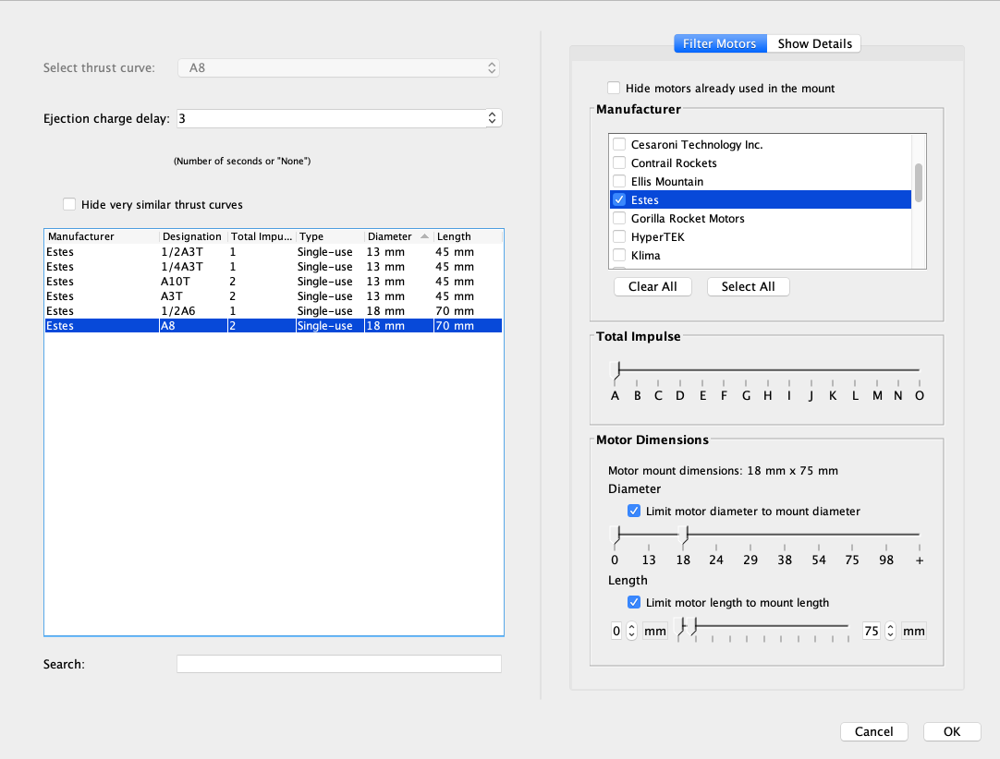
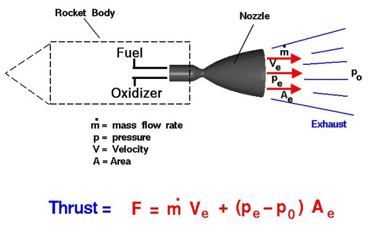

Motor comercial, tobera, presión y empuje
Leer un motor comercial y distinguir presión, empuje e impulso usando imágenes y salidas de referencia.
El motor forma parte de un conjunto elegido
Un motor comercial es un componente con identificación y documentación propias. La elección del proyecto requiere compatibilidad física, masa de conjunto y sistema de recuperación, además del comportamiento de vuelo esperado. Tener una letra pequeña en la etiqueta no resuelve por sí solo toda esa selección.

En la nomenclatura habitual, un código como C6-3 contiene una letra de intervalo de impulso, un número de empuje medio nominal y una referencia de retardo en segundos. El retardo no es la duración de empuje. La ficha concreta y las instrucciones del fabricante prevalecen sobre una interpretación incompleta de la etiqueta.
La denominación de un motor comercial reúne información con funciones distintas. La letra corresponde a un intervalo de impulso total. El número siguiente expresa el empuje medio nominal según la nomenclatura utilizada. El último número identifica el retardo nominal en un producto que lo incorpore. Leer la etiqueta abre preguntas que se responden con la ficha específica del fabricante: referencia exacta, datos de funcionamiento y compatibilidad prevista. El código abreviado no reemplaza esa documentación.
Qué hace una tobera, explicado con un dibujo

La combustión genera gases calientes dentro del motor. La tobera conduce y acelera su salida. El intercambio de cantidad de movimiento produce empuje sobre el vehículo. La garganta es la sección estrecha del esquema. La forma completa responde a un diseño especializado que aquí se reconoce de manera conceptual.
La presión describe fuerza repartida sobre un área y se expresa en pascales o sus múltiplos. El empuje es una fuerza y se expresa en newtons. Aunque estén relacionados en el funcionamiento del motor, no son la misma magnitud. Una gráfica de presión y otra de empuje pueden tener formas relacionadas y aun así usar ejes y unidades diferentes.
Palabras que aparecen en la explicación
| Término | Idea para reconocer |
|---|---|
| Cámara | Zona donde se generan los gases |
| Tobera | Paso que conduce y acelera la salida |
| Presión | Fuerza por área |
| Empuje | Fuerza que recibe el vehículo |
Presión y empuje describen cosas relacionadas, pero diferentes. La presión expresa fuerza por área en una zona; el empuje es una fuerza sobre el vehículo. La tobera guía la salida del gas y transforma parte de su energía en movimiento dirigido. El dibujo de NASA permite reconocer cámara, salida y chorro. En esta clase se señala qué representa cada término del esquema y su unidad, sin calcular ni fabricar una cámara o una tobera.
Una curva explica algo que la letra no cuenta
Una curva de empuje muestra cómo cambia la fuerza con el tiempo. El impulso total es el área bajo esa curva. Dos curvas pueden compartir un intervalo de impulso y repartirlo de forma diferente. Por eso un número de clase no permite imaginar toda la salida del motor ni decidir su compatibilidad con cualquier vehículo.
Leer tres datos diferentes
En una explicación de etiqueta aparecen clase C, empuje medio nominal 6 N y retardo de 3 s.
Razonamiento del caso
Son tres datos distintos: intervalo de impulso, fuerza media nominal y retardo. No se concluye que el motor empuje durante tres segundos ni que todos los clase C entreguen el límite superior de su intervalo.
Qué buscar en la documentación comercial
| Dato | Por qué interesa en el curso |
|---|---|
| Identificación completa | Relacionar el objeto con su ficha |
| Dimensiones y masa | Comprobar compatibilidad del conjunto |
| Curva e impulso | Entender la entrega de empuje |
| Recuperación y retardo | Revisar el sistema previsto |
| Instrucciones de uso | Usar el componente según el fabricante |
No hace falta integrar matemáticamente una curva para comprender su lectura básica. El equipo debe poder señalar el comienzo, el fin del empuje y una diferencia visible entre dos curvas documentadas. Los cálculos internos del motor quedan fuera de la construcción del alumnado.
También conviene separar masa y fuerza. La balanza del taller informa una masa, normalmente en gramos. Una curva de empuje informa fuerza en newtons. No se comparan directamente los números de ambas pantallas como si fueran la misma unidad. El docente puede mostrar esta diferencia sin calcular una trayectoria: nombra el objeto que se pesa, la fuerza que cambia con el tiempo y la configuración comercial a la que pertenece la curva.
Qué veremos en openMotor
openMotor es un simulador de balística interna: estudia el motor, mientras OpenRocket y RockSim representan el vehículo. El programa puede mostrar presión y empuje calculados. Para esta introducción el docente prepara una salida de referencia identificada y se trabaja sobre su significado, sin convertirla en instrucciones de diseño o fabricación de motor.
- Abre la instalación y localiza las áreas de resultados y sus unidades. Distingue el modelo del motor del archivo de vehículo.
- Con la salida de referencia del docente, identifica qué gráfica muestra presión y cuál empuje.
- Lee un instante y una unidad. Comprueba si el eje vertical está en Pa, MPa, N u otra unidad declarada.
- Explica qué dato de esa salida serviría para describir empuje y qué información de vehículo todavía falta.
- Registra programa, versión y origen de la salida. Una imagen sin procedencia no es una validación del motor comercial.
Cada programa dentro del trabajo
| Programa | Objeto de estudio | Uso del equipo |
|---|---|---|
| openMotor | Motor y resultados internos | Lectura conceptual guiada |
| OpenRocket | Vehículo completo | Configuración y simulación |
| RockSim | Vehículo completo | Comparación posterior |
La salida de referencia debe existir antes de impartir esta demostración. No se entrega un diseño de motor ni un archivo de fabricación. Si el docente usa una captura publicada, debe presentarla como tal y conservar la fuente. [OM]
OpenRocket y RockSim representan el movimiento del vehículo. openMotor estudia un modelo interno de motor y produce variables como presión y empuje. Esa diferencia explica por qué no se usa una salida de un programa como si fuera automáticamente una entrada certificada del otro. El docente muestra resultados ya identificados y el alumno aprende a leer ejes, unidades y procedencia. La selección del conjunto de vuelo conserva la documentación del componente comercial elegido.
La selección comercial se conecta con el vehículo

El empuje llega al cuerpo a través de sus interfaces. El motor debe corresponder al soporte y a la retención previstos, y el conjunto debe revisarse con la recuperación que se utilizará. En un curso inicial conviene estudiar una solución comercial definida y bien documentada en lugar de combinar piezas elegidas de forma independiente.
- Identifica la referencia comercial que el docente ha propuesto para el proyecto.
- Comprueba su envolvente con el plano y el soporte correspondiente.
- Anota qué masa y qué configuración se usarán en la simulación.
- Relaciona la recuperación prevista con la documentación del conjunto.
- Deja registrada cualquier incompatibilidad antes de continuar al montaje.
Un objeto que cabe no está necesariamente integrado
El diámetro permite introducir un motor comercial, pero el soporte no corresponde a su referencia y no está resuelta la recuperación.
Razonamiento del caso
Que entre en el tubo solo comprueba una dimensión. El conjunto sigue pendiente. Se revisan soporte, retención, masa, documentación y recuperación antes de pasar a la configuración de vuelo.
La letra agrupa un intervalo, no una cantidad fija que todos los motores de esa clase deban alcanzar. Si se comparan componentes comerciales, se usan sus fichas concretas. Tampoco se traslada una salida calculada de un modelo interno a un componente comercial de nombre parecido. La procedencia de la curva y la referencia del producto permiten discutir el funcionamiento sin fabricar ni modificar un motor.
Explicar el motor con palabras de modelismo
El alumno debe distinguir tres niveles: qué ocurre físicamente en el motor, qué dice su documentación comercial y qué necesita el vehículo completo. Un dibujo de tobera responde a la primera pregunta. Una etiqueta y una ficha responden a parte de la segunda. La simulación y el montaje del modelo ayudan a resolver la tercera.
Conclusiones y límites de esta clase
| Podemos explicar | Todavía requiere otra evidencia |
|---|---|
| Qué representan presión y empuje | Comportamiento real de un motor concreto |
| Cómo leer una etiqueta habitual | Compatibilidad de cualquier combinación |
| Qué gráfica corresponde a una magnitud | Validación de un cálculo interno |
| Qué dato falta en el vehículo | Aceptación del conjunto para volar |
Pregunta de cierre
¿Un valor de presión mayor significa automáticamente que nuestro cohete volará mejor?
Razonamiento del caso
No. La presión no resume el motor ni el conjunto. Para el curso importan componente comercial apropiado, configuración representada y revisión del vehículo completo. No se aumenta ni se modifica un motor buscando un resultado.
Entrega una ficha de identificación del motor comercial propuesto y una explicación breve de presión, empuje e impulso. Añade una imagen de referencia correctamente atribuida y señala qué dato se utilizará en OpenRocket.
Preguntas de cierre
¿El retardo del código equivale al tiempo de empuje?
No. Son tiempos diferentes.
¿Impulso y energía tienen las mismas unidades?
No. El impulso se expresa en N·s y la energía en J.
¿openMotor sustituye a OpenRocket?
No. Representan objetos de estudio diferentes.
Entrega
Ficha comercial y lectura conceptual de una salida identificada.
Bibliografía y procedencia
[CAT] National Association of Rocketry. Rocket Motor Resources.
[TH] NASA Glenn. Rocket Thrust.
[OM] openMotor. Repositorio y descripción del programa.
[NAR] National Association of Rocketry. Model Rocket Safety Code.
[OR1] OpenRocket. Basic Rocket Design.